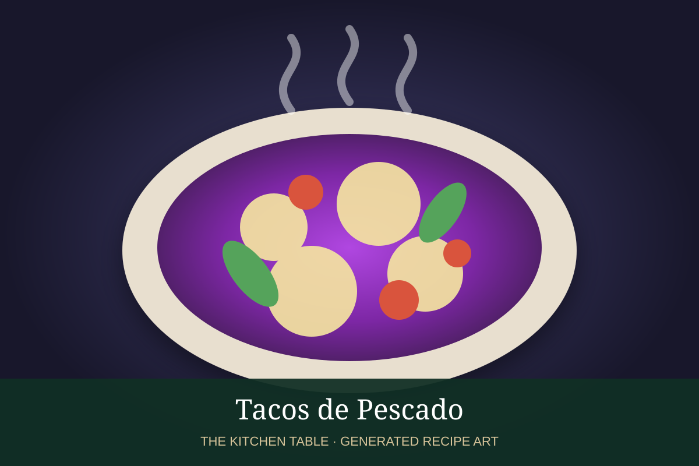

← Back to all recipes
SEAFOOD · MEXICAN
Tacos de Pescado
Crisp or grilled fish tacos with cabbage, lime, crema, and fresh salsa.
40 minMakes 8 tacos

Photo: Muy Delish
Ingredients
- 1 1/2 lb firm white fish
- 1 tsp chili powder
- 1/2 tsp cumin
- 1 tsp kosher salt
- 2 tbsp neutral oil
- 8 corn tortillas
- 2 cups shredded cabbage
- 1/2 cup Mexican crema
- Juice of 1 lime
- Pico de gallo or salsa verde
- Cilantro and lime wedges
Preparation
- Season fish with chili powder, cumin, and salt.
- Grill or sear in oil until just cooked through, then break into large flakes.
- Warm tortillas.
- Mix crema with lime juice.
- Fill tortillas with fish and cabbage.
- Top with lime crema, salsa, cilantro, and extra lime.